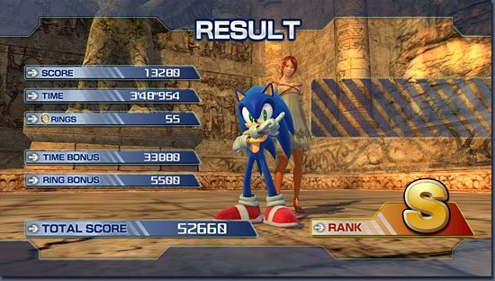

みなさんこんにちは。
そろそろ『SONIC THE HEDGEHOG』を全部クリアした方も結構いるんじゃないでしょうか？ということで、今回はやりこみ要素についてお話しします。
今作では、今までのソニックシリーズでの「エンブレム」をソレアナの「ゴールドメダル」という設定にしています。全部で１８０枚・・・すべて集めるのは果てしない道のりです。
アクションステージは、通常クリアでゴールドメダルを１枚もらえますが、それ以外にもランクＳでクリアすることでさらに１枚もらえます。
しかし、ランクＳでのクリアは結構難しい。今回のゲームのランクＳの獲得のコツは、すばやいゴールだけではありません。効率よくエネミーを倒しつつ、それでいてある程度のスピードで走り、かつリングをたくさん持ってゴールすることが必要です。
ステージもいくつかのエリアに別れている場合は、長い間の集中力が必要なので大変ですが、何度かプレイしてうまくなると、きっとランクＳを取れるはずです。
それと、群れを成している敵を見つけたらリーダーを攻撃してください。手下は自動的に倒せて「ＲＡＤＩＣＡＬ」というボーナススコアをゲットすることが出来ます。

ランクＳを取るのはなかなか難しい
シルバーメダルは油断した頃に現れる！
今回、タウンステージやアクションステージには、「シルバーメダル」というメダルが存在します。アクションステージは、ノーマルモードのみ１０個、タウンステージはそれぞれのキャラクターごとに３０個あります。
カメラを回転させないと映らない場所やショートカットしてみて初めて取れる場所、絶妙なタイミングでジャンプして初めて取れる場所などいろいろです。
さらに、周りのリングを全部集めると出てきたり、敵を倒すと出てくるものもあります。残念ながら日本では、攻略本が発売されませんので、その位置を細かく説明する参考資料はないのですが、必ずすべて存在しますので根気よく探してください。
称号をみんなに見せつけよう！
これはＸＢＯＸ３６０固有のものになってしまうのですが、ＸＢＯＸ３６０の機能にアチーブメントという達成度を評価してくれる機能があります。ネット上で自分の情報を見たときなど自分がどんなアチーブメントを達成したのかが、ほかの人にも分るわけです。
ソニックでも、この機能を採用しています。たとえば、ラストシナリオまでクリアすると「終わりを刻む者」と表示されますし、ソニックのタウンミッションをすべてクリアすると「ソレアナの英雄」というアチーブメントをゲットできます。
そして、ゴールドメダルすべてをあつめると「ゴールドメダリスト」という称号が得られます。ＸＢＯＸ３６０ユーザーの方は、是非「ゴールドメダリスト」を目指してがんばってください。
ということで今回はやりこみ要素についてお話しをしました。すべての要素をクリアするまでは果てしない道のりですが、くじけずにがんばってください。
次回は、このゲームの発売に際して作ったいろいろなものについてお話ししたいと思います。
お楽しみに。

1997年セガ入社
『ソニックＲ』、『ソニックアドベンチャー』に参加後、『サンバＤＥアミーゴ』『ジャイアントエッグ』などのディレクターを務める。